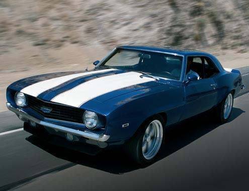
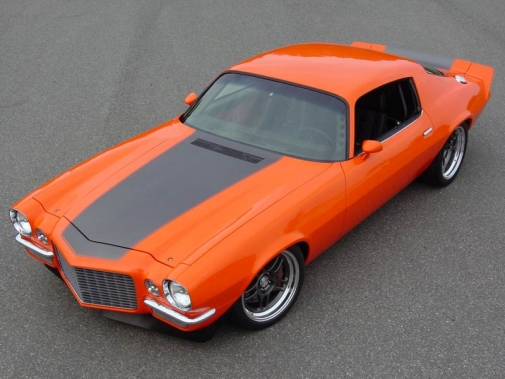
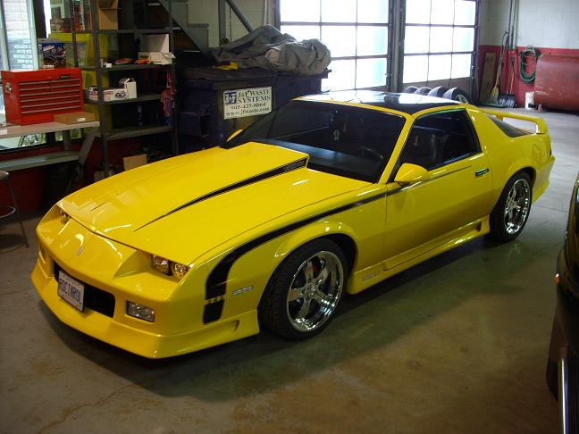
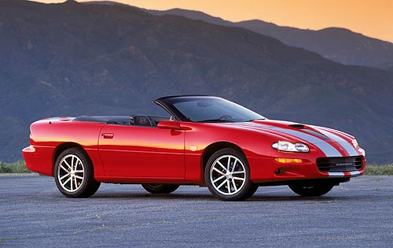
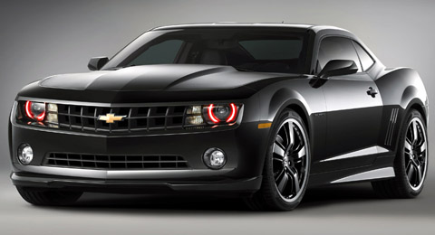

|
HistoryBeginningsOn September 29, 1966, Chevrolet released the '67 pony/muscle Camaro. Related to the Pontiac Firebird, the Camaro was built to compete with the Ford Mustang. Since that beginning, there have been five generations of Camaros since the first classic to the modern muscle car it is today. 1st Generation: 1966-1969Sporting the design that inspired the modern Camaro, the first generation was available as a convertible or coupe. It supported up to a 7 L V8 engine placed in the front of the car similar to other popular sporty cars in its day. 2nd Generation: 1970-1981The second generation Camaro was restyled and featured a wider and larger body. This Camaro could run a 7.4 L V8 engine. Impovements were made in the suspension as well. This is the first generation that included a Z-28 version. 3rd Generation: 1982-1992Offering modern fuel injection and a five-speed transmission, this generation of Camaros improved on technology as well as design. While only supporting at most a 5.7 L V8, this generation was a quarter ton lighter than the previous models. 4th Generation: 1993-2002Modern improvements such as the traction control and anti-lock brakes were included in this edition of Camaro. With its refined 5.7 L V8, the fourth generation could produce up to 325 hp. The engine was improved and the design redone, but for the first time Camaro production stopped due to slow sales and overproduction. 5th Generation: 2009-PresentFollowing two concept cars in the middle of the decade (the 2006 coupe and the 2007 convertible), the 2010 Camaro was released with a 6.2 L V8 capable of 426 bhp. Inspired by the first generation classics, the modern Camaro sports a 6 speed manual or auto transmission and will be available as a convertible or coupe. Rumors of the reappearance of the Z-28 make this seem like a possibility as well. |
|